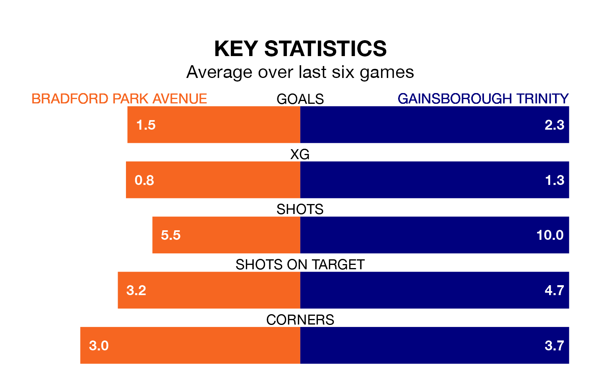

Struggling Bradford Park Avenue face Gainsborough Trinity at the Horsfall Stadium on Saturday looking to build on a win in their last league outing.
After securing all three points with a 2-1 victory over Basford United on April 6, Bradford Park Avenue sit 20th in the Northern Premier League.
They travel to play a Gainsborough Trinity side 11th in the standings, who also won their last match, 4-1 against Hyde United, on April 13.
In the last 10 years, Bradford Park Avenue and Gainsborough Trinity have played each other on nine occasions. They won four each, and they drew once.
On average, Bradford Park Avenue scored 2.0 goals and the Blues 1.2 in those matches.
Their last meeting was on November 18, when Gainsborough Trinity won 2-1 at home.
Bradford Park Avenue are in disappointing form in the Northern Premier League, with one win and two draws from their last six games.
With four wins and two losses over that period, Gainsborough Trinity's form is much better – they have taken 12 points from 18, compared to the hosts' five.
With 45 goals in 39 games so far this season, Bradford Park Avenue are scoring at below the league average rate with 1.2 goals per game. And they are conceding more than average, letting in 78 goals at a rate of 2.0 per game.
The Blues are also below average scorers, with 1.5 goals per game, compared to a league average of 1.6. They have conceded 1.6 goals per game.
Updated: 15:40 (UTC), 18/04/24